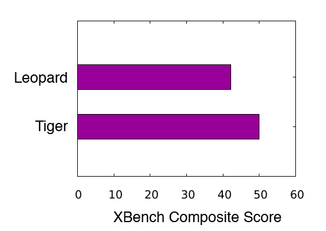

When the new OS came out from Apple, I decided to test how it fared on my Powerbook. I decided to do a comprehensive benchmark to test performance. I found several options for possible benchmarks:
I decided to use Xbench because it is free and is a general system benchmark.My system:
12” Powerbook G4 1.5 Ghz
1.25 GB Ram
80GB HD
Superdrive
I ran the benchmark on both OSX installed consecutively on the same machine. The benchmark was run after a fresh reboot. I averaged the results of five runs for each OS.

Tiger performed better than Leopard. The performance difference was also noticeable through normal use. Applications would take longer to open and longer to respond. This was surprising since Leopard is the new version. I guess that Apple optimized the new version for the Intel processors and therefore runs slower on PowerPC.
After this I'm not upgrading my laptop to Leopard. Leopard is almost 20% slower.